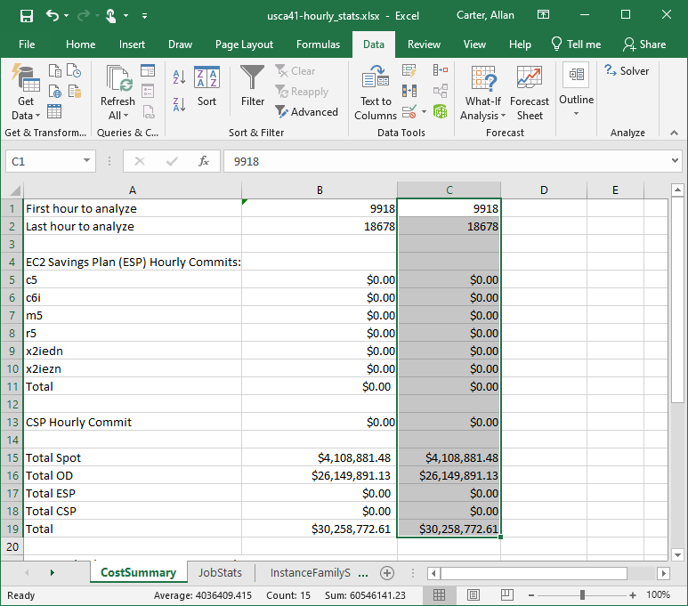

HPC Cost Simulator
This tool analyzes the jobs that have been run on compute clusters managed by the IBM LSF, SchedMD Slurm, and Altair Accelerator schedulers and simulates the hourly cost of running the jobs on AWS. The AWS Cloud Economics team can use this data to build a commercial proposal to optimize the cost using Saving Plans and Reserved Instances.
Since scheduler data can indicate business sensitive data (tape out dates, project names) and PII (user names), this tool anonymizes all aspects of the data to meet the security and privacy requirements of Semiconductor companies. All output files are clear-text CSV files for auditability.
The tool consists of two steps. The first is the parsing of the scheduler job completion data and is scheduler specific. The output of the parser is a CSV file with the job data that is required for cost analysis. The second step is processing the job data and simulating the cost of running them on AWS.
Dependencies
- Python 3.6 or newer
- sudo access to install any required tools
A bash setup script is provided to install the required yum packages, create a Python virtual environment with all required Python packages, and activate the virtual environment. The pip packages and versions are listed in requirements.txt. The setup script must be sourced, not executed, to set up the environment to run the tool.
source setup.sh
Instance Type Information
The tool requires a list of available instance types in the region and their prices that is stored in instance_type_info.json. The version that comes with the tool has the data for all regions that was complete when it was generated. This is provided for convenience so that the customer can run the tool without an AWS account or IAM permissions.
NOTE: Since available instance types and prices change over time this file should be updated before before being used.
The get_instance_type_info.py script can be used to update instance_type_info.json. It requires the following IAM permissions.
{
"Version": "2012-10-17",
"Statement": [
{
"Sid": "GetEC2InstanceTypeInfo",
"Effect": "Allow",
"Action": [
"ec2:DescribeInstanceTypes",
"ec2:DescribeRegions",
"ec2:DescribeSpotPriceHistory",
"pricing:GetProducts"
],
"Resource": "*"
}
]
}
To get information just for one region run the following commands.
source setup.sh
rm instance_type_info.json
get_ec2_instance_info.py --input instance_type_info.json --region REGION
You can get the information for all regions by leaving off the --region argument.
source setup.sh
rm instance_type_info.json
get_ec2_instance_info.py --input instance_type_info.json
Running the Tool
Job Parsing
The scheduler parsers parse the scheduler-specific job completion data and saves it to a common CSV format. The parsers are scheduler specific Python scripts.
Parsing can take several hours to complete and we recommend testing on a small subset of the accounting records before running on the entire dataset.
Job Analysis
After the job completion data has been parsed, the job analyzer analyzes the CSV file, simulates the costs on AWS, and builds the output files.
summary.csvsummary_stats.csvhourly_stats.csvhourly_stats.xlsx
The job analyzer can call the parser, however, parsing is the longest step so it is recommended that it be run separately from the job analyzer. The parser output is a CSV file that can be used as the input to the job analyzer. The job analyzer runs relatively quickly and can be run with different configurations on the same job data.
summary.csv
Provides aggregated data on the jobs (at the individual task level) including the number of jobs, the total runtime, and the total wait time. These provide a high-level understanding of the customer's workload and helps us show the customer how much of their workload needs high memory instances (usually only a small percentage) and therefore the opportunity for savings from right-sizing their compute instaces.
The wait time only includes the time the job waited after it was eligible to run. For example, if the job was waiting on a license or a dependency on another job, then the time that the jobs was ineligble to run is not included in the wait time. The reported wait time is the time that the job waited for compute resources to become available.
Example:
| MemorySize | 0-1 Minutes | <-- | <-- | 1-5 Minutes | <-- | <-- | 5-20 Minutes | <-- | <-- | 20-60 Minutes | <-- | <-- | 60-240 Minutes | <-- | <-- | 240-1440 Minutes | <-- | <-- | 1440-1000000 Min | <-- | <-- |
|---|---|---|---|---|---|---|---|---|---|---|---|---|---|---|---|---|---|---|---|---|---|
| Job count | Total duration | Total wait time | Job count | Total duration | Total wait time | Job count | Total duration | Total wait time | Job count | Total duration | Total wait time | Job count | Total duration | Total wait time | Job count | Total duration | <-- | Job count | Total duration | Total wait time | |
| 0-1GB | 1451224 | 295357 | 0 | 298597 | 711710 | 0 | 268244 | 2464401 | 0 | 84075 | 2832260 | 0 | 48673 | 5699891 | 0 | 21450 | 14928398 | <-- | 37222 | 940366200 | 0 |
| 1-2GB | 7800 | 4645 | 0 | 33076 | 88381 | 0 | 27230 | 285958 | 0 | 11301 | 390683 | 0 | 9244 | 1129832 | 0 | 5195 | 3431642 | <-- | 4444 | 104405917 | 0 |
| 2-4GB | 3866 | 2482 | 0 | 68157 | 201630 | 0 | 94798 | 1120678 | 0 | 108126 | 3764462 | 0 | 47593 | 5155126 | 0 | 17470 | 10450704 | <-- | 7154 | 100846783 | 0 |
| 4-8GB | 425 | 219 | 0 | 5352 | 17497 | 0 | 9978 | 106535 | 0 | 7959 | 275142 | 0 | 5768 | 701616 | 0 | 3831 | 2662791 | <-- | 3218 | 66155544 | 0 |
| 8-16GB | 759 | 274 | 0 | 722 | 2044 | 0 | 5904 | 72149 | 0 | 4462 | 183369 | 0 | 11244 | 1307581 | 0 | 6363 | 3983032 | <-- | 3024 | 42831455 | 0 |
| 16-32GB | 389 | 108 | 0 | 237 | 771 | 0 | 1148 | 14321 | 0 | 1573 | 58971 | 0 | 2971 | 359024 | 0 | 2577 | 1766540 | <-- | 2017 | 29588185 | 0 |
| 32-64GB | 435 | 133 | 0 | 63 | 209 | 0 | 605 | 7613 | 0 | 1079 | 41389 | 0 | 1731 | 206706 | 0 | 1283 | 1026257 | <-- | 1107 | 22509888 | 0 |
| 64-128GB | 160 | 60 | 0 | 71 | 140 | 0 | 35 | 383 | 0 | 110 | 4379 | 0 | 244 | 33840 | 0 | 408 | 284120 | <-- | 285 | 6939359 | 0 |
| 128-256GB | 177 | 81 | 0 | 125 | 275 | 0 | 107 | 743 | 0 | 45 | 1826 | 0 | 122 | 15285 | 0 | 258 | 206859 | <-- | 192 | 5132956 | 0 |
| 256-512GB | 580 | 227 | 0 | 297 | 889 | 0 | 330 | 3258 | 0 | 249 | 9267 | 0 | 165 | 20148 | 0 | 53 | 35973 | <-- | 69 | 1955220 | 0 |
| 512-1000000GB | 498 | 249 | 0 | 447 | 918 | 0 | 226 | 2116 | 0 | 141 | 4907 | 0 | 45 | 5168 | 0 | 41 | 29869 | <-- | 26 | 729017 | 0 |
In this (real customer) example, over 95% of the jobs were not memory intensive (below 32GB/Core), but the customer is sizing their entire HPC fleet for the more memory intensive 5% of the workload.
hourly_stats.csv
Provides an hour-by-hour cost simulation broken down by spot and on-demand costs.
| Relative Hour | Total OnDemand Costs | Total Spot Cost | m5 | r5 |
|---|---|---|---|---|
| 0 | 8.93 | 0.00 | 8.93 | 0.00 |
| 1 | 10.97 | 0.00 | 10.97 | 0.00 |
| 2 | 11.02 | 0.00 | 11.02 | 0.00 |
| 3 | 10.88 | 0.00 | 10.88 | 0.00 |
| 4 | 11.02 | 0.00 | 11.02 | 0.00 |
| 5 | 10.96 | 0.00 | 10.96 | 0.00 |
| 6 | 11.00 | 0.00 | 11.00 | 0.00 |
| 7 | 11.02 | 0.00 | 11.02 | 0.00 |
| 8 | 11.03 | 0.00 | 11.03 | 0.00 |
| 9 | 11.22 | 0.00 | 11.16 | 0.05 |
| 10 | 12.93 | 0.00 | 11.26 | 1.66 |
| 11 | 12.98 | 0.00 | 11.54 | 1.44 |
| 12 | 13.04 | 0.00 | 11.21 | 1.82 |
| 13 | 10.25 | 0.00 | 10.21 | 0.03 |
| 14 | 11.92 | 0.00 | 11.07 | 0.84 |
| 15 | 15.58 | 0.00 | 11.53 | 4.05 |
| 16 | 13.97 | 0.00 | 12.09 | 1.87 |
| 17 | 17.04 | 0.00 | 12.82 | 4.21 |
| 18 | 25.28 | 0.00 | 12.23 | 13.05 |
hourly_stats.xlsx
The Excel spreadsheet provides a convenient way to view the data and perform calculations on it. For example, in the following example the "First hout to analyze" was changed to only include the last 12 months worth of data.

The InstanceFamilySummary worksheet can be used to get insights into the predicted usage of different instance families. In this example it shows that the c6i family is used the most with very little utilization of other instance families. The average hourly use can be used to help choose the upper constraint for the savings plans.

Optimize Savings Plans Using Excel Solver
Excel includes a numerical solver that can be used to optimize the use of Savings Plans to reduce your compute costs. The instructions for setting up the solver are on the "CostSummary" tab of the spreadsheet.
First, enable the Excel solver. Select File -> Options

Select Add-ins on the lower left.

If the Solver Add-in isn't active then select Manage: Excel Add-ins and click Go.
Select the Solver Add-in and click OK.

If the Solver Add-in is already active then it will show up like this.

Now you are ready to run the solver. Copy the original values by selecting column B and pasting the values into column C. Then select the Data menu select Solver on the ribbon. the Solver Add-in is already active then it will show up like this.

Configure the solver by selecting the total cost as the Objective. Then select the Savings Plan commit cells in By Changing Variable Cells:. Then add constraints for the Savings Plan commit cells. Then click Solve and wait while the Solver calculates the savings plan commits that will minimie your overall costs.

The solver may run a while, but when it finishes then save the results.

The spreadsheet will then show the savings plan commits that minimize the total costs. In this case Savings Plans were able to reduce total costs by about 10%. Note that this is due to the very variable nature of the jobs. The more sustained usage that you have, the more cost-effective Savings Plans will be.

This graph shows the variability of the workload.